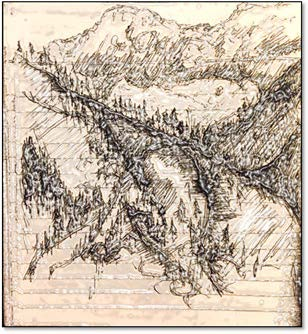

פרק א׳
עמק. אהבת החוכמה:
'לך בעקבות הטבע, והכל כבר יקרה'
וודאות השינוי
זרעי וודאות נישאים ברוח חולפים על פנינו מלטפים עדינות, נוסכים שלווה רגעית כל כך
נזרעים באדמת ההשתנות שמאמצת אותם לחיקה וצומחים חיים והוודאות משתנה.
ניצני תמימות עם בוא האביב מחייכים לעולם חסר רחמים ופרפר מתאהב בכמה אבקנים ושוב נזרעים זרעי חיים שבהם הוודאות היחידה היא השינוי.
*

תנועה
רוחות ההשתנות קרבות מהעמק רוחשות גאיות יערות עבותים ופסגות מושלגות
כתצוגת תכלית של הטבע משחקי עננים מרהיבים אתה צופה מתבונן בתנועה האיטית, בהשתנות. כיצד נוצר וכיצד מתפוגג כיצד בא והולך ברצף איטי שאין לעוצרו, אין לגעת בו.
ולעומתם אתה תמיד צעיר כי כל רגע אתה משתנה ענן ענן המסרב לוותר על יכולתו הטבעית להיות מרובה אפשרויות. אין סוף צורות וצבעים וצלילים. דרך כל שביב של אנושיות כי שום דבר אנושי לא זר לי, כולל גיחוכי ובושתי למקרא שורות אלו, שנראות כהבלות ממרחק השתנותי.
ובתנועה זו אין התחלה וסוף קדימה או אחורה לטוב או לרע יש רק שינוי, תנועה.
*

ידע
הדבר היחיד שאני יודע הוא שאני לא יודע. אני יודע שהכל לולאה, הכל מתחלף, הכל עובר. כמו ידע זה ממש. לכל סוגיה יש מקבילים והתשובה הפשוטה. וכל התשובות נכונות. כל סטייה מהאין סוף סופה לעבור, להוסיף ולהישכח, להתחלף. אלה החיים. כל מילה שאגיד, רעיון שאציין, נתון לעבור ולהעלם. להיות לא רלוונטי. להטעות, לשמח, לאכזב, לשעמם, להקסים ולהעלם.
כמו כל יצירת אומנות. וזה כל מה שהספר הזה.
את דברי הימים כבר אמר קוהלת, ואין חדש תחת השמש.
רק יצירת חיים חדשה, אישית; מחשבתית, אומנותית, מדעית. בעץ או בנייר, בכסף או בזהב. בראש או בלב. במוזיקה או מתמטיקה. בפיזיקה או באמונה. לכל אין סוף גווניה של היצירה האנושית – אין סוף חציבות שונות בגוש השיש של מיכלאנג'לו. גוש השיש של הקיום.
לתת תשובות על הקיום? התשובה היחידה שלי, היא שאין תשובות לעיננו. כל אמת צפה – סופה להישאב למערבולת שממנה תצוף האמת הבאה, לפני שתכנס למערבולת אחריה. כל אמת, ברגע הפיכתה לקיימת לעיננו, ברגע שלבשה צורה, הגדרה, רעיון, מילה – סופה לעבור מין העולם. להיכנס למערבולת הניתוח, השאלה, הבדיקה, הגינוי, האימוץ, חוסר ההסכמה, נושא לשיחה. יהיה מה להגיד עליה. יתחיל דיון, ויכוח, ריב, חילוקי דעות. איזו מין אמת זו?
*
אמת
לכן האמת היא בלתי נתפסת, בלתי נאמרת, נכתבת. אין לה מילה, צורה. היא לא רעיון, הרגשה או מחשבה. היא הרקע שתמיד עוטף כל, והכל שייך אליו, אך מעטים שמים לב אליו.
הנוף שממנה נלקחה ערימת חיינו. לכן אנליטית כל מה שגיבבתי בספר הוא מתחלף, עובר, זניח. וגם כל עולמי ברגעי הכתיבה.
כל מה שבאמת משנה.
*
ידיעה
אמת זו; ניתן להעלם אל מולה וכך להתמוסס בתוכה. לראות את הבריאה בכללותה מבלי יכולת לתופסה, מבלי יכולת להסביר את שראית, להיספג בנצח בשתיקה.
זו ההארה. החופש הגדול בעולם. חופש לרוח האנושית. חופש לתודעה של האדם. ההתמוססות באחד. שקט לנפשנו הסוערת.
ומכאן היכולת לראות יופי מסמא חושים. לחוות אושר מסמא רגשות. לחיות כשעצם המחשבה על הקיום מרטיטה את הגוף, וכל מבט יכול לקרוע את הלב מעצם השלמות.
לחיות במודעות לכך שכל ההוויה היא מכלול הרמוני אדיר שמתפתח בדיוק בלתי נתפס. מכלול שנע בשלמות שלא תתואר. שלמות נטולת שיפוט. לחוות את האיחוד האקסטטי של הקיום עם עצמו.
*
מדע
מה גודלה של תודעה? מה משקלה של מחשבה? מה מהירות של רגש? מהי עוצמה של חוויה? מה מיקומה של שאלה? לאחר שתודעותינו חפרו מספיק עמוק בעולם הפיזי הנפלא, עולה המסקנה שהחוקר משפיע על התשובה. מיקום או תנועה? וודאות או מקריות? אחד או אין סוף?
אפשר לנסות להפוך מדי פעם את המשוואה. זו התודעה שמעצבת את התמונה, כמו גם את גודלו של החלקיק הקטן ביותר הבא שנמצא. ואיפה נמצא החלקיק הקטן ביותר של מחשבה?
*
אמונה
מערכת היחסים בין האדם לאין סוף. בעולם בו הכל מושלם, עדיין נראה כאילו אנחנו מפספסים – האדם משתוקק למגע אלוהים ומוצא עצמו משחק עם איסורים ומאבקים. למה לא נאמר לנו, שהמגע הוא בסך הכל שקט שבא מבפנים?
האין סוף אינו מחכה לאגדה, לסיפור בריאה. הוא אינו מתיישר לחוק או מצווה. אינו מספיק להיתפס לדת ותורה, כי הוא אינו נתפס בשום צורה. הוא משאיר את הסוף לאדם, כי הוא עצמו חופשי מעולם..
*
שיטה
דווקא להשתמש בדואליות. בדיכוטומיה התודעתית. כתזה, אנטיתזה וסינתזה – אש מים ואוויר, ) 3 היסודות של ספר היצירה(, ככלי עבודה. לצורך ירידה במרכבה. ולעיתים כדי לפרק כל מכשול ומחסום שנקרה, בהיותך מורה הדרך של עצמך, להגיע ללב העניין.
*
מסקנות
פרדוקסליות
איך הטעות גלומה באמת איך הספק גלום בביטחון איך הזמן, כוח השינוי, הוא החזק מכל ואיך טמון בו זרע הוודאות.
ההפכפכות שבידיעה שמקבילה לבורות. ככל שאדם יודע יותר כך עליו להשתחרר יותר. השבריריות שבחוכמה וברצון, היופי שבסכנה ובתום.
ככל שהעולם מסתובב, הכל נראה לבן. ככל שאתה מתרחק, ההבדלים קטנים. ממרחק שנות אור, הכל כמעט נראה אותו דבר, שקט, שלם וגם די משעמם.
לכל קיום יש הפך שמשלים אותו להעלמות והשיפוט שמפריד ביניהם בוחר אחד ומעלים שני, השיפוט עצמו, הוא ההפכפך מכולם פרדוקס פנימי מושג התנועה והשינוי מקיים החיים.
*
"אם הגיון ומשמעות מתנגשים זה עם זה היה מוכן להשהות את השיפוט"
פרקטליות / שפע
רק עלה אחד אני צריך כדי לעבור את חיי בשלום, כך נגלה לי בחלום. עלה אחד, והעולם מלא עצים.
*
עדינות
הפרפר רפרף לי ליד האוזן פרוואטי עינגה אותי במקום הכי רגיש מגע אוויר כנפיים עדין
*
"רוח מעל ארץ – ההיטהרות הסתיימה, אך טרם הוגשה המנחה"
מעון הקודש
עין – סוף
איזו שלמות לא הייתי מזיז כלום לא הייתי משנה שום דבר כל תנועה בזמנה הנכון הכל במקומו מונח שקט.
לבד לגמרי אני אוהב את עצמי ברגעים אלו כמו שאני אוהב את העולם אהבה ללא תנאי
לא רעב לא צמא לא חם לי או קר מדי לא דוקר או מגרד
נוח לי בצורה שלא תאמן כאילו אני מת
מרחף בתוך השלמות שאני לא יכול לתאר פה הכל מתחיל ונגמר זה עכשיו זה כאן מלא, שלם, עגול, כל הניגודים מתאחים כל הסתירות מתיישבות כל השאלות נענות אהבה מוחלטת מורגשת בכל גופי שהוא העולם כעת. ברגע זה העולם נעצר.
הארה*
אחריות
'זה אשר אוהב את העולם כמו את גופו, ניתן להפקיד בידיו בבטחה את העולם כולו'
*
אחדות
חזרתי לגן עדן לפני פרי הדעת לפני ההבדל בין טוב לרע נזכרתי שהם אחד שאין הבדל
*
'עדן – רובד רוחני עילאי הנקרא כך בשל רב תפארתו ועוצם התענוג שחשים כל המתחברים אליו' (יהדות)
'נירוונה – שלוות נפש הודות להרמוניה פנימית והרמוניה עם הסביבה הנובעות מתובנה אינטואיטיבית של חוקי הקיום' (בודהיזם)
אושר
ילד קטן מול האושר; עומד נבוך קצת מבולבל חיוך מבויש על פני, מה? הגעתי? מה אני עושה כאן? אני הקטן? מול האושר המושלם? ובחיוך צנוע פושט ידי לצדדים ואומר "אין מה לעשות" "זה מה יש" ונעלם.
*
רוח
נישא ברוח אני נשיבתה מלטף בדרכי את הקיום. תחת כנפי הציפורים, בין עלי העצים, גרעין תנועת העננים.
מרחף על פני תוהו ובוהו אור וחושך שמים ומים ארץ וים, מאחד את כולם.
דרך נקודת ההתחלה, הניצוץ הבראשיתי שוכן בתוכך, רוח מי שלא תהיי.
*
קו פרשת המים
ולמרות החיבור, ולמרות ההזדהות, שבילי ממשיך בהתפתלות – קטן, צר וכמעט נעלם, כמעט שלא נראה בטבע האדיר שסביבו.
ונידונתי לחיות חיי על גבול ההתמוססות בעולם בין מוות, הארה ואשליה.
טיפתי תישאר תלויה בפס לעד, כמו דגל תפילה הנע עם הרוח, בקו פרשת המים לא לכאן, לא לשם ובכולם. במקום בו נשמתך חופשית, נקייה. הנוף מכה בך בכל פינה האוויר קריר, צלול וקצת דליל.
ארצות הגבהים של הגוף והמחשבה של הנפש והתודעה הם ביתי לטוב ולרע לייאוש ולשבירה ולשלמות שאני כרגע חווה.
*